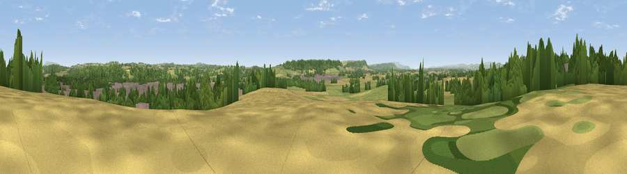

Cock Croft Hill
#25001 in England · top 70% of its area beats it · near LeominsterThe view, rendered

A 360° render of this exact spot computed from the terrain model, tree cover and land cover — summer colours, afternoon light, calibrated against photographs of famous viewpoints. Real trees, hedges and buildings will differ in detail.
The panorama
Grey silhouette: terrain skyline in each direction (720 bearings, Earth curvature and refraction included). Dashed green: skyline with trees (+15 m) and buildings (+8 m) as obstacles. Blue strip: how far the ground is visible on each bearing.
Where the view opens
Wedge length = distance to the farthest visible ground on that bearing (vegetation-aware). Rings at 10, 25 and 50 km.
What fills the view
37% grassland · 26% woodland · 23% cropland · 14% built-up
Angular shares of the visible panorama (visual magnitude), not map area. Landscape diversity 0.58 (0–1 Shannon).
Key numbers
More beautiful places nearby
The staircase of upgrades: each row has a higher view potential than everything closer. Driving times are estimates from straight-line distance, calibrated against real road routing — check an actual route before setting out.
| Place | Direction | Drive | Score |
|---|---|---|---|
| Viewpoint near Leominster | NW · 2 km | ~5 min | 56.9 |
| Viewpoint near Stoke Prior | SSE · 3 km | ~6 min | 60.2 |
| Viewpoint near Ivington | S · 3 km | ~7 min | 65.1 |
| Viewpoint near Westhope | SSW · 7 km | ~14 min | 70.5 |
| Viewpoint near Westhope | SSW · 7 km | ~14 min | 77.0 |
| Viewpoint near Yarpole | NNW · 10 km | ~20 min | 78.1 |
| Viewpoint near Leinthall Starkes | NNW · 12 km | ~22 min | 80.3 |
| Gatley Hill | NNW · 12 km | ~22 min | 82.6 |
52.21954, -2.74538 · source: dobih hill · position refined by local search. Computed location — check access rights before visiting.